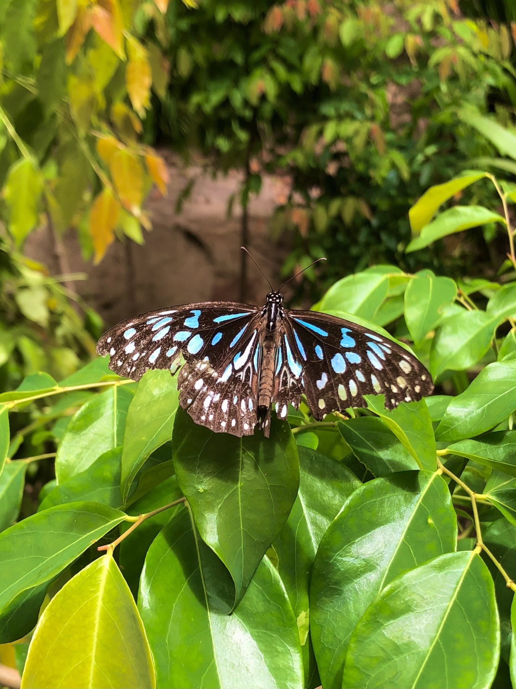
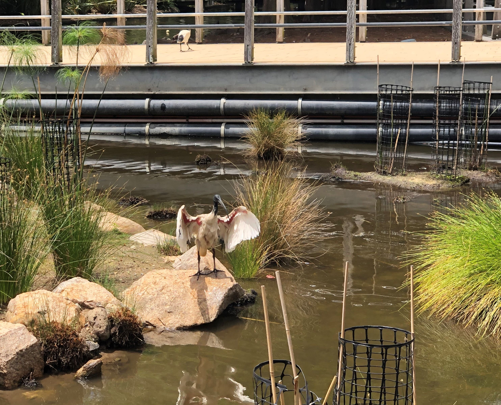
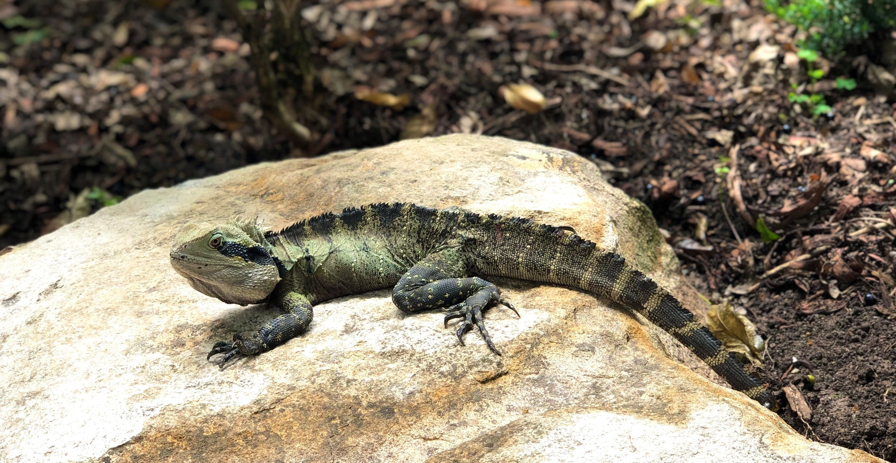
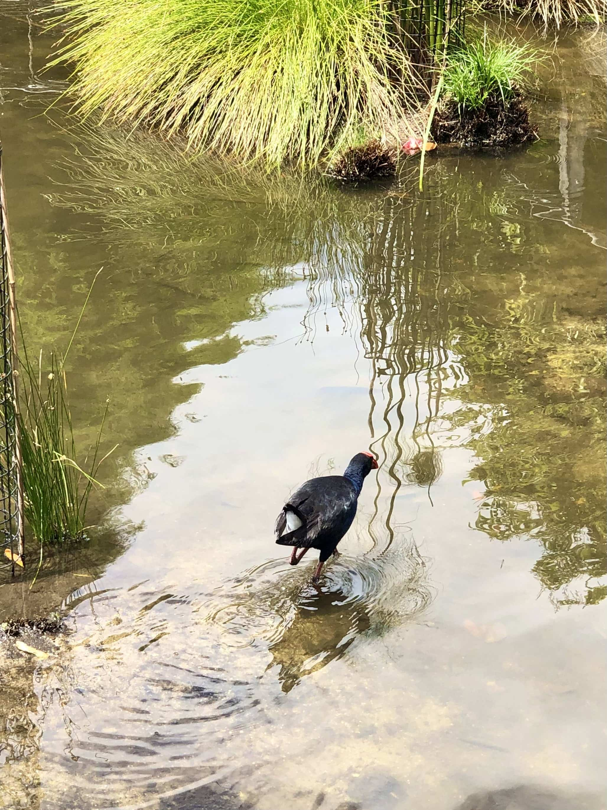
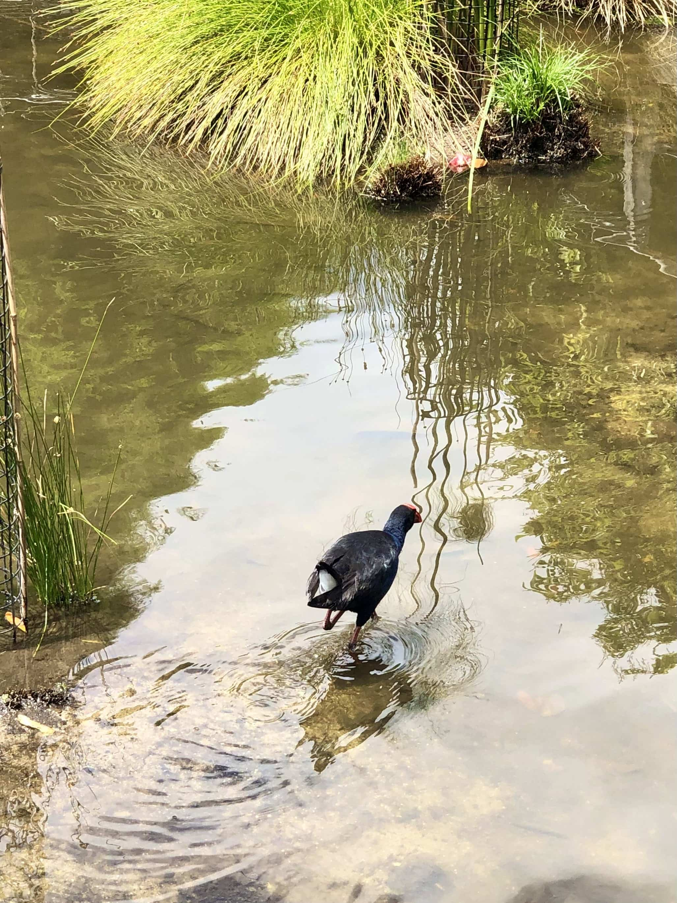

Wildlife
The gardens are scattered with birds, lizards and other interesting little critters.
The animals you will see come in big variety, from beautiful butterflies, to local ibises (aka "bin chickens").

Roma Street is home to these mini dinosaurs- Water dragons! They are everywhere, and come in all different shapes, sizes and colours.
 

The waterdragons are often found on the footpaths, so be careful where you step! Try exploring the rainforest and fountain, and see how many animals you can find.